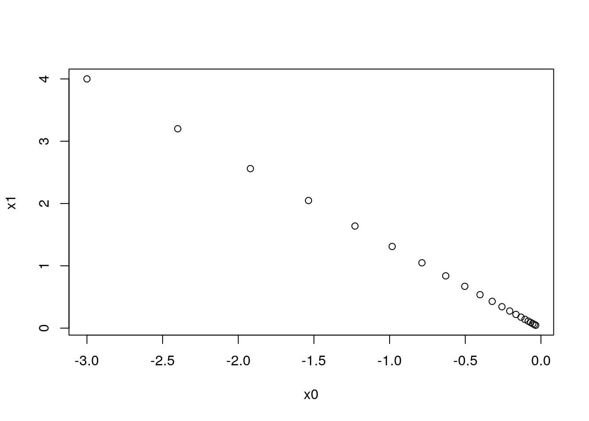

library(tidyverse)
library(R6)4章 ニューラルネットワークの学習
準備
source("common/functions.R")損失関数
交差エントロピー誤差
cross_entropy_error <- function(y, t) {
if (is.vector(y)) {
y <- matrix(y, 1)
t <- matrix(t, 1)
}
if (identical(dim(t), dim(y))) {
t <- apply(t, 1, which.max) - 1
}
batch_size <- nrow(y)
-sum(log(map2_dbl(1:batch_size, t, ~ y[.x, .y + 1]) + 1e-7)) / batch_size
}y <- c(0.1, 0.05, 0.6, 0.0, 0.05, 0.1, 0.0, 0.1, 0.0, 0.0)one-hot表現
t <- c(0, 0, 1, 0, 0, 0, 0, 0, 0, 0)
cross_entropy_error(y, t)[1] 0.5108255ラベル
cross_entropy_error(y, 2)[1] 0.5108255バッチデータ
y2 <- matrix(seq(0.1, 0.6, 0.1), 2, byrow = TRUE)
t2 <- matrix(c(0, 1, 0, 0, 0, 1), 2, byrow = TRUE)
cross_entropy_error(y2, t2)[1] 1.060131cross_entropy_error(y2, c(1, 2))[1] 1.060131勾配
勾配
numerical_gradient <- function(f, x) {
h <- 1e-4
if (is.vector(x)) x <- matrix(x, 1)
grad <- matrix(0, nrow(x), ncol(x))
for (i in 1:nrow(x)) {
for (j in 1:ncol(x)) {
x1 <- identity(x)
x1[i, j] <- x[i, j] + h
x2 <- identity(x)
x2[i, j] <- x[i, j] - h
grad[i, j] <- (f(x1) - f(x2)) / (2 * h)
}
}
grad
}function_2 <- function(x) sum(x ^ 2)numerical_gradient(function_2, c(3.0, 4.0)) [,1] [,2]
[1,] 6 8numerical_gradient(function_2, c(0.0, 2.0)) [,1] [,2]
[1,] 0 4numerical_gradient(function_2, c(3.0, 0.0)) [,1] [,2]
[1,] 6 0勾配法
勾配降下法
gradient_descent <- function(f, init_x, lr = 0.01, step_num = 100) {
x <- init_x
for (i in 1:step_num) {
x <- x - lr * numerical_gradient(f, x)
}
x
}もしくは
gradient_descent <- function(f, init_x, lr = 0.01, step_num = 100) {
reduce(1:step_num, ~ .x - lr * numerical_gradient(f, .x), .init = init_x)
}init_x <- c(-3.0, 4.0)
gradient_descent(function_2, init_x, lr = 0.1, step_num = 100) [,1] [,2]
[1,] -6.111108e-10 8.148144e-10勾配法による更新のプロセス
gradient_descent_history <- function(f, init_x, lr = 0.01, step_num = 100) {
accumulate(1:step_num, ~ .x - lr * numerical_gradient(f, .x), .init = init_x)
}x_history <- gradient_descent_history(function_2, matrix(init_x, 1), lr = 0.1, step_num = 20)
x_history_df <- x_history %>%
reduce(rbind) %>%
as.data.frame %>%
set_names("x0", "x1")
head(x_history_df) x0 x1
1 -3.00000 4.00000
2 -2.40000 3.20000
3 -1.92000 2.56000
4 -1.53600 2.04800
5 -1.22880 1.63840
6 -0.98304 1.31072plot(x_history_df)
ニューラルネットワークに対する勾配
SimpleNet <- R6Class("SimpleNet", list(
W = NULL,
initialize = function(W) self$W <- W,
predict = function(x) x %*% self$W,
loss = function(x, t) {
z <- self$predict(x)
y <- softmax(z)
cross_entropy_error(y, t)
},
loss_function = function(x, t) {
w_orig <- self$W
function(w) {
self$W <- w
loss <- self$loss(x, t)
self$W <- w_orig
loss
}
}))W <- matrix(c(0.47355232, 0.9977393, 0.84668094,
0.85557411, 0.03563661, 0.69422093),
2, byrow = TRUE)
net <- SimpleNet$new(W)
x <- c(0.6, 0.9)
p <- net$predict(x)
p [,1] [,2] [,3]
[1,] 1.054148 0.6307165 1.132807t <- matrix(c(0, 0, 1), 1)
net$loss(x, t)[1] 0.9280683勾配
f <- net$loss_function(x, t)
numerical_gradient(f, net$W) [,1] [,2] [,3]
[1,] 0.2192476 0.1435624 -0.362810
[2,] 0.3288714 0.2153436 -0.544215fは重みを受け取って損失を返す関数。
学習アルゴリズムの実装
2層ニューラルネットワークのクラス
TwoLayerNet <- R6Class("TwoLayerNet", list(
params = NULL,
initialize = function(input_size, hidden_size, output_size,
weight_init_std = 0.01) {
self$params <- list()
self$params$W1 <- matrix(rnorm(input_size * hidden_size, sd = weight_init_std),
input_size, hidden_size)
self$params$b1 <- matrix(0, ncol = hidden_size)
self$params$W2 <- matrix(rnorm(hidden_size * output_size, sd = weight_init_std),
hidden_size, output_size)
self$params$b2 <- matrix(0, ncol = output_size)
},
predict = function(x) {
n <- nrow(x)
if (is.null(n)) n <- 1
a1 <- x %*% self$params$W1 + rep_row(self$params$b1, n)
z1 <- sigmoid(a1)
a2 <- z1 %*% self$params$W2 + rep_row(self$params$b2, n)
softmax(a2)
},
loss = function(x, t) {
y <- self$predict(x)
cross_entropy_error(y, t)
},
loss_function = function(name, x, t) {
w_orig <- self$params[[name]]
function(w) {
self$params[[name]] <- w
loss <- self$loss(x, t)
self$params[[name]] <- w_orig
loss
}
},
numerical_gradient = function(x, t) {
list(
W1 = numerical_gradient(self$loss_function("W1", x, t), self$params$W1),
b1 = numerical_gradient(self$loss_function("b1", x, t), self$params$b1),
W2 = numerical_gradient(self$loss_function("W2", x, t), self$params$W2),
b2 = numerical_gradient(self$loss_function("b2", x, t), self$params$b2)
)
}))net <- TwoLayerNet$new(input_size = 784, hidden_size = 100, output_size = 10)
net$params %>% map(dim)$W1
[1] 784 100
$b1
[1] 1 100
$W2
[1] 100 10
$b2
[1] 1 10ダミーの入力データと正解ラベル
x <- matrix(runif(100 * 784), 100)
t <- matrix(runif(100 * 10), 100)勾配を計算
grads <- net$numerical_gradient(x, t)